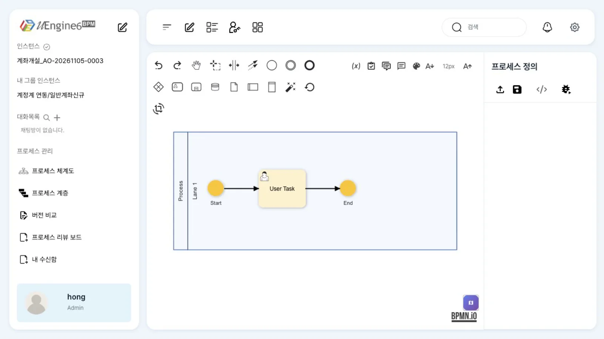
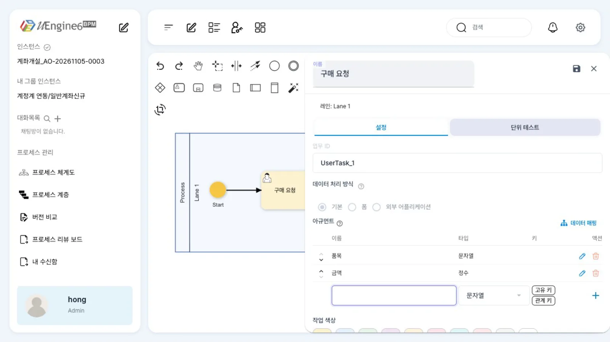
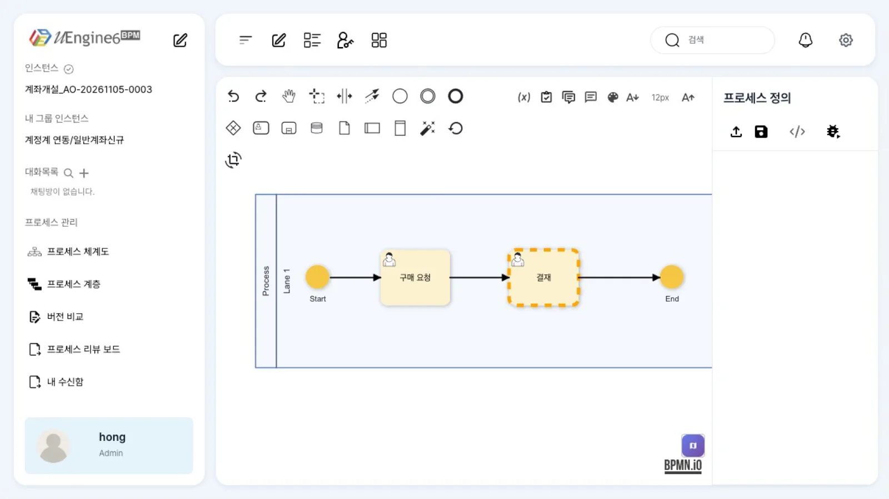
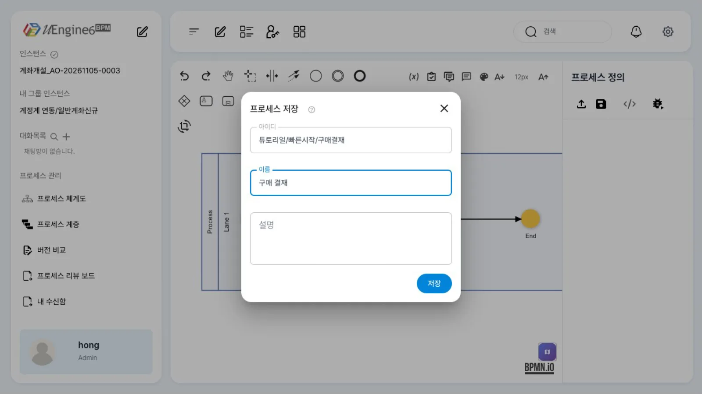
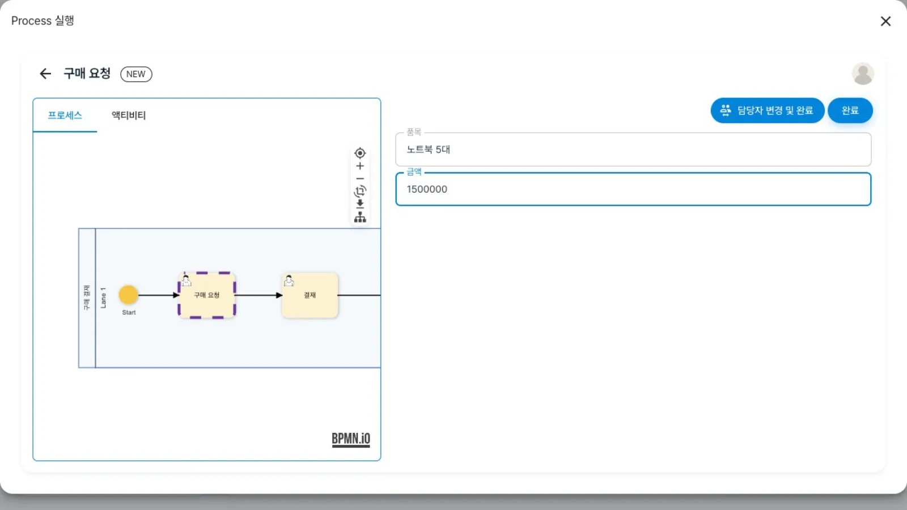
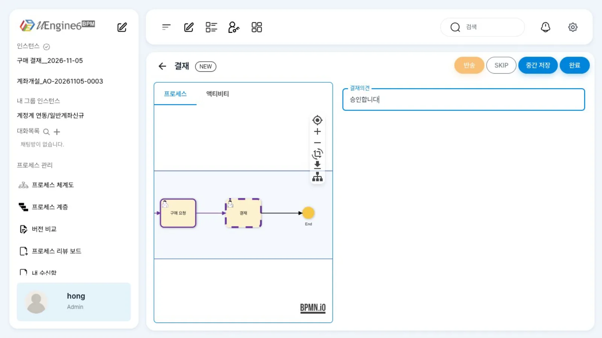
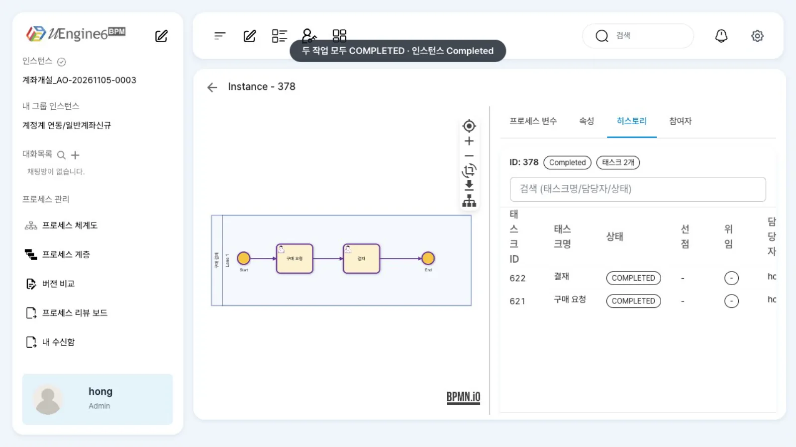

관리자 홍길동이 모델러에서 「구매 요청 → 결재」의 두 단계 프로세스를 그려 저장합니다. 이를 실행하고 업무 목록에서 작업을 끝낸 뒤 관리자 화면에서 완료를 확인합니다.
무엇을 · 왜#
프로세스 정의는 BPMN 2.0으로 그린 업무 흐름입니다. 정의를 실행할 때마다 인스턴스가 하나씩 생기고, 인스턴스는 흐름에 따라 사람이 처리할 작업을 만듭니다. 담당자는 업무 목록에서 자신의 작업을 열어 완료합니다.
이 장에서 쓰는 BPMN 요소는 다섯 가지입니다.
| BPMN 요소 | 뜻 | uEngine6에서 |
|---|---|---|
| 풀(participant) · 레인(lane) | 누가 하는가 | 레인 = 담당자 규칙. 규칙이 없는 레인의 작업은 프로세스를 시작한 사람에게 갑니다 |
| 시작 이벤트(start event) | 흐름의 시작 | 「실행」이나 POST /instance로 인스턴스가 생기면 여기서 출발합니다 |
| 사용자 작업(user task) | 사람이 하는 일 | _type이 org.uengine.kernel.HumanActivity 인 작업. 업무 목록에 카드로 뜹니다 |
| 시퀀스 흐름(sequence flow) | 다음 순서 | 화살표 |
| 끝 이벤트(end event) | 흐름의 끝 | 모든 경로가 끝나면 인스턴스 상태가 Completed가 됩니다 |
사용자 작업에는 아규먼트를 둘 수 있습니다. 아규먼트는 해당 작업 화면의 입력 칸입니다. 정의에는 작업 속성 JSON의 eventSynchronization.attributes로 저장됩니다. 아규먼트 값을 프로세스 변수에 저장하는 방법(데이터 매핑)은 작업 입력값과 데이터 매핑에서 다룹니다.
이 장의 프로세스는 레인이 하나이고 담당자 규칙을 두지 않습니다. 그래서 「구매 요청」과 「결재」가 모두 시작한 사람(홍길동)에게 갑니다. 결재를 다른 사람(윤팀장)에게 보내는 방법은 레인과 담당자에서 다룹니다.
따라 하기#
hong / 1234로 http://localhost:8288에 로그인한 상태에서 시작합니다.
- 새 프로세스를 엽니다. 주소
/definitions/chat을 열면 기본 템플릿이 나옵니다. 풀 「Process」, 레인 「Lane 1」 안에 「Start」 → 「User Task」 → 「End」가 이어져 있습니다.
기본 템플릿 - 첫 작업을 「구매 요청」으로 바꿉니다. 「User Task」를 두 번 눌러 속성 패널을 엽니다. 「이름」을
구매 요청으로 바꾸고, 「아규먼트」 아래 입력 칸에품목을 적고 Enter를 누릅니다. 다음 칸에금액을 적고, 타입을 「정수」로 고른 뒤 Enter를 누릅니다. 패널 오른쪽 위의 디스켓 아이콘을 눌러 저장합니다.
아규먼트 두 개 - 「결재」 작업을 덧붙입니다. 먼저 「End」를 오른쪽으로 끌어 자리를 만듭니다. 「구매 요청」을 한 번 누르면 옆에 컨텍스트 패드가 뜹니다. 「작업 덧붙이기」(사용자 작업 모양)를 누르면 새 작업이 「구매 요청」과 「End」 사이에 추가됩니다. 새 작업을 두 번 눌러 이름을
결재로 바꾸고, 아규먼트결재의견(문자열)을 추가합니다.
두 단계 프로세스 - 저장합니다. 오른쪽 위의 디스켓 아이콘을 누르면 「프로세스 저장」 대화상자가 뜹니다. 「아이디」에
튜토리얼/빠른시작/구매결재, 「이름」에구매 결재를 넣고 「저장」을 누릅니다. 아이디는 폴더를 포함한 경로이고, 파일은definitions/튜토리얼/빠른시작/구매결재.bpmn으로 저장됩니다.
프로세스 저장 - 실행합니다. 저장해도 주소는
/definitions/chat그대로입니다./definitions/튜토리얼/빠른시작/구매결재를 열고 오른쪽 위 재생 아이콘(「실행」)을 누릅니다. 「Process 실행」 창에 첫 작업 「구매 요청」의 입력 칸 「품목」·「금액」이 나옵니다.노트북 5대,1500000을 넣고 「완료」를 누릅니다. 이때 인스턴스가 만들어지고 첫 작업이 끝납니다.
실행 창 - 업무 목록에서 결재합니다. 업무 목록(
/todolist)의 「진행 중」 칸에 「결재」 카드가 있습니다. 카드에는 작업 번호(TaskId)와 인스턴스 번호(InstId)가 적혀 있습니다. 카드를 눌러 열고 「결재의견」에승인합니다를 적은 뒤 「완료」를 누릅니다.
결재 작업 - 관리자 화면에서 확인합니다. 완료한 작업은 업무 목록의 「완료됨」 칸에 나타나지 않습니다(이 브랜치의 결함). 관리자 화면(
/admin)의 「인스턴스 목록」에서 방금 실행한 인스턴스 「구매 결재__<날짜>」의 상태는 「Completed」입니다. 인스턴스를 열고 「히스토리」 탭을 누르면 「구매 요청」과 「결재」가 모두COMPLETED입니다.
히스토리
설정 레퍼런스#
패널 칸과 정의#
| 화면 | 정의(XML·JSON) |
|---|---|
| 「프로세스 저장」의 「아이디」 | 파일 경로 definitions/<아이디>.bpmn. 실행할 때 쓰는 사본은 archive/<아이디>.bpmn/0.1.bpmn |
| 「프로세스 저장」의 「이름」 | bpmn:process@name, uengine:json의 definitionName |
| 작업 「이름」 | bpmn:userTask@name (업무 목록 카드 제목) |
| 작업 「업무 ID」 | bpmn:userTask@id (엔진의 tracing tag. 첫 작업은 UserTask_1, 덧붙인 작업은 Activity_<무작위>) |
| 「데이터 처리 방식」 「기본」 | _type: org.uengine.kernel.HumanActivity (「폼」은 폼 붙이기) |
| 「아규먼트」의 이름·타입 | eventSynchronization.attributes[]의 name·className(문자열 String, 정수 Integer) |
| 「고유 키」·「관계 키」 | isKey·isCorrKey (이벤트로 작업을 끝낼 때 씁니다 — 작업을 이벤트로 끝내기) |
| 레인 「Lane 1」 | bpmn:lane에 담당자 설정이 없음 → 시작한 사람 |
저장된 정의(발췌)#
<bpmn:process id="Process_1" isExecutable="true" name="구매 결재">
<bpmn:extensionElements>
<uengine:properties><uengine:json>{"definitionName":"구매 결재","version":"0.1",…}</uengine:json></uengine:properties>
</bpmn:extensionElements>
<bpmn:laneSet id="LaneSet_1">
<bpmn:lane id="Lane_1" name="Lane 1">…</bpmn:lane>
</bpmn:laneSet>
<bpmn:userTask id="UserTask_1" name="구매 요청">
<bpmn:extensionElements>
<uengine:properties json="{"_type":"org.uengine.kernel.HumanActivity",
"eventSynchronization":{"eventType":"","attributes":[
{"name":"품목","className":"String","isKey":false,"isCorrKey":false},
{"name":"금액","className":"Integer","isKey":false,"isCorrKey":false}],
"mappingContext":{"mappingElements":[]}}}"/>
</bpmn:extensionElements>
</bpmn:userTask>
<bpmn:userTask id="Activity_…" name="결재">…결재의견(String)…</bpmn:userTask>
</bpmn:process>
uengine:properties의 json 속성은 XML 안에 들어가므로 따옴표가 "로 바뀌어 저장됩니다. 읽기 쉽게 풀면 아래와 같습니다.
{"_type": "org.uengine.kernel.HumanActivity",
"eventSynchronization": {"eventType": "",
"attributes": [{"name": "품목", "className": "String", "isKey": false, "isCorrKey": false},
{"name": "금액", "className": "Integer", "isKey": false, "isCorrKey": false}],
"mappingContext": {"mappingElements": []}}}
화면에서 호출하는 API#
| 화면 동작 | 요청 |
|---|---|
| 편집 잠금 | PUT /definition/lock |
| 「저장」 | PUT /definition/raw?defPath=튜토리얼/빠른시작/구매결재.bpmn, PUT /definition/map |
| 「실행」 창 열기 | POST /dry-run (첫 작업 화면을 미리 만듭니다) |
| 「실행」 창의 「완료」 | POST /start-and-complete (헤더 isSimulate: false) — 인스턴스 시작 + 첫 작업 완료 |
| 업무 목록 | GET /worklist/search/findToDo |
| 작업 「완료」 | POST /work-item/<작업 번호>/complete ({"parameterValues": {"결재의견": "승인합니다"}}) |
같은 일을 API로만 하는 방법은 API로 같은 일 하기에 있습니다.
알려진 제약#
첫 레인 패널은 열지 마세요
프로세스를 시작하는 사람의 레인(이 장의 「Lane 1」)에 배분 설정이 들어가면 「실행」이 서버 500으로 실패하고, 실행 창에는 회색 뼈대만 계속 보입니다(오류 문구 없음). 레인 패널을 열고 「저장」만 눌러도 빈 배분 설정이 들어가 같은 오류가 발생합니다. 이미 이 문제가 발생했다면 XML 보기에서 그 레인의 uengine:properties를 지우세요.
| 증상 | 우회 |
|---|---|
| 업무 목록 「완료됨」 칸이 늘 비어 있음 | 관리자 화면(/admin/<인스턴스>) 「히스토리」 탭으로 확인 |
저장해도 주소가 /definitions/chat 그대로 |
저장한 아이디로 /definitions/<아이디>를 다시 엽니다 |
화면에서 새로 저장하면 definitions/map.json의 「미분류」에 항목이 생김 |
정의 파일을 git으로 관리한다면 이 파일의 변경도 함께 봅니다 |
| 저장 뒤에도 편집 잠금이 남음 | 자물쇠 아이콘(저장 없이 잠금 해제)을 누릅니다 — 모델러 둘러보기 |
| 실행 창의 「담당자 변경 및 완료」 | 다음 작업의 배분 대상을 고르는 창이 뜹니다. 이 장에서는 「완료」만 씁니다 |
덧붙이기 중 브라우저 콘솔에 appendPreview is not defined |
동작에는 지장이 없습니다 |
확인 문제#
「결재」 작업은 왜 홍길동의 업무 목록에 왔나요?
두 작업이 모두 담당자 규칙이 없는 레인 「Lane 1」에 있기 때문입니다. 규칙이 없는 레인의 작업은 프로세스를 시작한 사람에게 갑니다. 다른 사람에게 보내려면 레인을 나누고 담당자(그룹·역할·사용자)를 정합니다.
「실행」 창에서 「완료」를 누르기 전에 창을 닫으면 인스턴스가 생기나요?
생기지 않습니다. 창을 열 때는 POST /dry-run으로 첫 작업 화면만 만들고, 「완료」를 눌러야 POST /start-and-complete가 인스턴스를 만들고 첫 작업을 끝냅니다.
아규먼트 「금액」의 타입을 「정수」로 고르면 정의에는 무엇으로 남나요?
eventSynchronization.attributes의 {"name": "금액", "className": "Integer"}로 남습니다. 문자열은 String입니다.